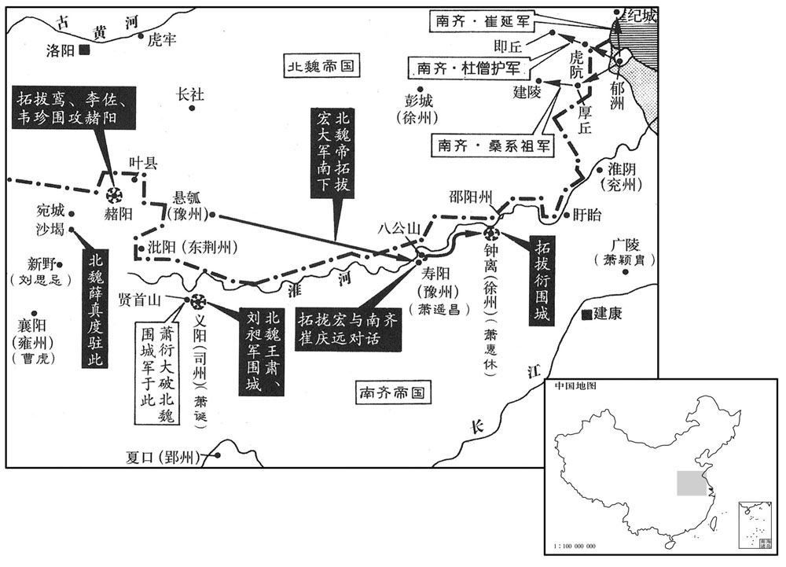
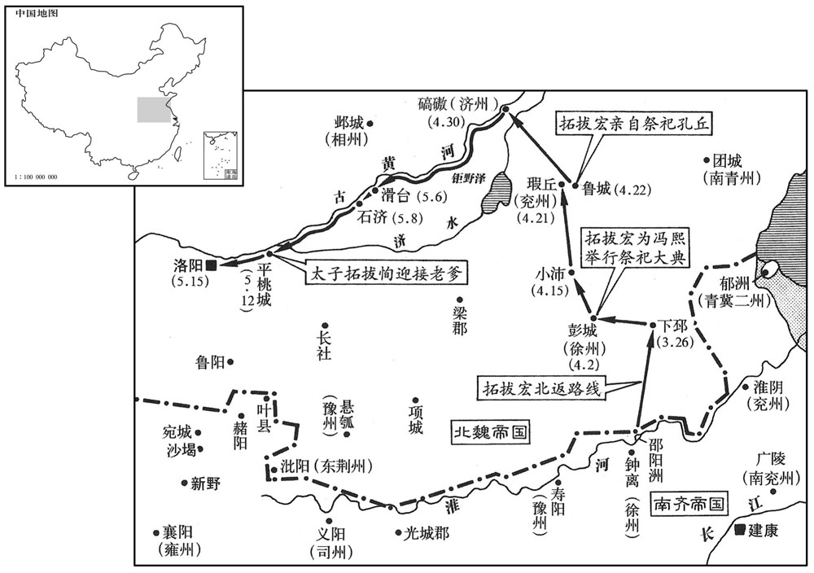

公元495年资治通鉴：本年记事、原文与白话对照
按原书编年位置阅读；追叙和史论不等于本年发生的事件。白话采用所据译本，缺译不以生成译文补齐。
卷140 · 本年记事
公元495年 · 齐高宗明皇帝建武二年
建武二年〔（乙亥、四九五）〕
上传原文的注释括号有异常，字符原样保留；无法可靠划分的段落默认全文显示。
本年事件索引（现代整理）
- 南齐遣王广之等督诸军抵御北魏
- 北魏禁掠淮北并攻钟离、义阳
- 南齐戒严，陈显达统军防魏
- 孝文帝率军渡淮至寿阳
- 崔庆远与孝文帝论南齐废立及两国和亲
- 孝文帝沿淮东进，抵达钟离
- 萧衍等夜袭北魏军解义阳之围
- 南齐军攻取魏境多座城堡
- 冯诞病逝，孝文帝中止南下并回钟离
- 高闾、陆叡劝孝文帝撤军，魏军班师
- 张欣泰劝崔慧景说服魏军撤离邵阳
- 奚康生焚毁齐军船舰助北魏军渡淮
- 杨播率军殿后，突围渡淮归魏
- 崔慧景准许邵阳洲魏军归还
- 萧颖胄未迁广陵百姓避魏
- 魏使卢昶受辱，孝文帝将其免为庶民
- 北魏太师冯熙去世
- 孝文帝不返平城奔丧，命冯熙归葬洛阳
- 拓跋英攻克汉中诸栅并围南郑后奉诏撤军
- 李仲反对北魏预先派兵戍守南郑
- 孝文帝巡幸小沛、鲁城并祭孔子
- 北魏攻赭阳失利，南齐军在沙堨击败薛真度
- 孝文帝贬黜攻赭阳失利的诸将
- 北魏广川王拓跋谐去世，孝文帝定王丧临哭礼
- 孝文帝巡幸滑台，太子出迎
- 孝文帝杖责贪纵不法的赵郡王拓跋干
- 孝文帝还洛阳告太庙并行饮至礼
- 孝文帝决意改革北俗，禁止朝廷说鲜卑语
- 孝文帝遣太子赴平城为冯熙奔丧
- 北魏下诏搜求秘阁所无的民间遗书
- 北魏规定迁洛居民葬于河南
- 北魏改用长尺和大斗
- 萧道成诛杀萧谌兄弟及诸王萧子明等
- 南齐任萧坦之为领军将军
- 北魏撤毁邺城密皇后庙
- 杨馥之助南齐击败武兴氐杨集始
- 北魏选十五万勇士充任羽林、虎贲
- 北魏金墉宫建成并设立各级学校
- 孝文帝拒绝重修景阳山，礼贤崇文
- 薛聪执法不避权贵，受孝文帝信任
- 北魏六宫及文武百官迁往洛阳
- 孝文帝命高闾致仕并任元雍为相州刺史
- 南齐改封诸皇子为王
- 孝文帝自邺返回洛阳
- 北魏诏令考核诸州官员并整备军备
- 南齐停建世宗东田并拆毁兴光楼
- 南齐为太子纳褚氏为妃并大赦
- 孝文帝定圜丘礼并亲祀天、大赦
- 北魏颁布品令，推行官员大选
- 孝文帝命群臣直言得失并举荐贤才
- 南齐修缮晋代帝陵并增置守卫
- 孝文帝在光极堂赐群臣冠服
- 北魏开始铸造并通用太和五铢钱
- 北魏任光城蛮帅田益光为南司州刺史
- 氐王杨炅去世

本年形势与背景参考图

本年形势与背景参考图
春，正月，壬申，遣镇南将军王广之督司州、右卫将军萧坦之督徐州、尚书右仆射沈文季督豫州诸军以拒魏。
春季，正月壬申（初二），南齐派遣镇南将军王广之、右卫将军萧坦之、尚书右仆射沈文季分别督率司州、徐州、豫州三地的军队，抵抗北魏的入侵。
癸酉，魏诏：「淮北之人不得侵掠，犯者以大辟论。」〔淮北时已属魏，故诏不得侵掠其人。辟，毗亦翻。〕乙未，拓跋衍攻锺离，徐州刺史萧惠休乘城拒守，间出袭击魏兵，破之。惠休，惠明之弟也。〔间，古苋翻。萧惠明见一百三十三卷宋苍梧王元徽二年。〕刘昶、王肃攻义阳，〔昶，知两翻。〕司州刺史萧诞拒之。肃屡破诞兵，招降万余人。〔降，户江翻。〕魏以肃为豫州刺史。刘昶性褊躁，御军严暴，〔褊，补典翻。躁，则到翻。〕人莫敢言。法曹行参军北平阳固苦谏；昶怒，欲斩之，使当攻道。〔攻道，攻城庂道，矢石之所集也。〕固志意闲雅，临敌勇决，昶始奇之。
癸酉（初三），北魏孝文帝颁发诏令：“不得抢劫掠夺淮河以北的居民，违犯者处以死刑。”乙未（二十五日），北魏拓跋衍率部进攻钟离，南齐徐州刺史萧惠休据城抗守，并且不时地派兵出城袭击北魏军队，终于将其击败。萧惠休是萧惠明的弟弟。北魏刘昶、王肃率军进攻义阳，遇到司州刺史萧诞的抵抗。王肃多次击败萧诞的军队，招纳降兵一万余人，因此北魏任命王肃为豫州刺史。刘昶性格暴躁，刚愎自用，对待下属官兵非常严酷残暴，部下都敢怒而不敢言。法曹行参军北平人阳固多次恳切地规劝刘昶，刘昶大怒，想杀掉阳固，便命令阳固做攻城先锋。阳固这个人平时性格优雅，风度悠闲，谁知临阵遇敌却表现的十分勇猛果敢，使刘昶感到非常惊奇。
丁酉，中外纂严。以太尉陈显达为使时节、都督西北讨诸军事，往来新亭、白下以张声势。〔使，疏吏翻；下同。〕
丁酉（二十七日），南齐举国上下戒备森严，严防以待。又派遣太尉陈显达为使持节、都督西北讨诸军事，来往巡视于新亭、白下一带，以壮大声势。
己亥，魏主潚淮；二月，至寿阳，众号三十万，铁骑弥望。〔弥望，犹言极望也。孔颖达曰：人目所望三十里，而天地合于三十里外，不复见之，是为极望。骑，奇寄翻。〕甲辰，魏主登八公山，赋诗。道遇甚雨，命去盖；〔去，羌吕翻。〕见军士病者，亲抚慰之。
已亥（二十九日），北魏孝文帝率大军渡过淮河；二月，抵达寿阳，三十万大军浩浩荡荡，铁甲骑兵多的一眼望不到头。甲辰（初五），孝文帝登上八公山，乘兴而作诗。途中突然遇上倾盆大雨，孝文帝便命令去掉自己的伞盖，与兵士一起淋雨共苦。他看到军队中有生病的士兵，还亲自去安抚慰问。
魏主遣使呼城中人，丰城公遥昌使崔〔【章：十二行本「崔」上有「参军」二字；乙十一行本同；孔本同。】〕庆远出应之。庆远问师故，〔左传：齐桓公以诸侯之帅伐楚，楚子使与师言曰：「不虞君之涉吾地也，何故﹖」〕魏主曰：「固当有故！卿欲我斥言之乎！〔斥，指也；直言以指入之罪过，无所回避，谓之斥。〕欲我含垢依违乎﹖」庆远曰：「未承来命，无所含城。」〔左传曰：国君含垢。杜预注曰：含垢，忍垢耻。〕魏主曰：「齐主何故废立﹖」庆远曰：「废昏立明，古今非一，未审何疑﹖」魏主曰：「武帝子孙，今皆安在﹖」庆远曰：「七王同恶，已伏管、蔡之诛；〔子隆，子懋、子敬、子真、子伦并郁林、海陵为七王。〕其余二十余王，或内列清要，或外典方牧。」魏主曰：「卿主若不忘忠义，何以不立近亲，如周公之辅成王，而自取之乎﹖」庆远曰：「成王有亚圣之德，故周公得而相之。〔相，息亮翻。〕今近亲皆非成王之比，故不可立。且霍光亦舍武帝近亲而立宣帝，唯其贤也。」魏主曰：「霍光何以不自立﹖」庆远曰：「非其类也。主上正可比宣帝，安得比霍光！若尔，武王伐纣，不立微子而辅之，亦为苟贪天下乎﹖」〔史言崔庆远之机辩。〕魏主大笑曰：「朕来问罪。如卿之言，便可释然。」庆远曰：「『见可而进，知难而退，』〔左传载晋大夫随武子之言。〕圣人之师也。」魏主曰：「卿欲吾和亲，为不欲乎﹖」庆远曰：「和亲则二国交欢，生民蒙福；否则二国交恶，生民涂炭。和亲与否裁自圣衷。」魏主赐庆远酒殽、衣服而遣之。
北魏孝文帝派人去传唤寿阳城中的南齐官员出来对话，丰城公萧遥昌便派崔庆远前去应对。见面，崔庆远先质问北魏出师来犯的理由，孝文帝回答说：“当然有原因。你想让我直接数落你们的罪过呢？还是顾及情面而含含糊糊地说呢？”崔庆远说：“我实在不明白你们的来意，所以还是直截了当地说吧！”孝文帝便问道：“你们君主为什么要连续废去两个皇帝而自立为君呢？”崔庆远答道：“废去昏君，另立明主，这种事情古今常见，并非只有我朝最近发生的这么一桩，所以不知道你对此又有何不理解之处呢？”孝文帝再反问道：“武帝的子孙们，现在都在哪儿？”崔庆远接着答道：“七位藩王乱国同罪，已经和周朝的管叔鲜和蔡叔度一样被杀掉了，其余的二十多位藩王，有的在朝廷中担任清要职位，有的在外面担任州郡长官。”孝文帝又问道：“你们现在的君主萧鸾如果没有忘掉忠义之德，为什么不从前帝近亲中选择一人立为新帝，如当年周公辅佐成王那样，而要自取皇位呢？”崔庆远回答：“周成王有亚圣的品德，所以周公立他为君而自己辅佐之。可是，如今本朝前帝近亲中没有能比得上周成王这样的人物，所以不能嗣立。况且，汉代霍光也曾经舍弃汉武帝的近亲而崐立汉宣帝刘询，只是因为他贤德呀。”孝文帝再逼问道：“那么，霍光为什么不自己登上皇位呢？”崔庆远再次答道：“因为霍光是外姓，不是皇族。本朝当今皇上正可比做汉宣帝刘询，怎么能拿他与霍光比呢？如果按照你说的那样，那么当年武王伐纣，没有立纣王庶兄微子为君而自己辅佐之，也就是贪求天下了吧？”孝文帝大笑着说道：“联前来本是问罪于你们，但是听了你刚才所讲的那些，心里也就明白了。”崔庆远说：“‘见可而进，知难而退’，这样就是圣人之师。”孝文帝又问道：“您希望与我和睦友好呢？还是不希望？”崔庆远回答说：“相睦友好则两国互相庆贺，人民大众承受好处。否则的话，两国关系恶化，互相交战，致使生灵涂炭，流离失所。能否和睦友好，完全由您来决定。”孝文帝赐赏崔庆远酒菜和衣服，送他回寿阳城。
戊申，魏主循淮而东，〔过寿阳不攻，引兵东下。〕民皆安堵，租运属路。〔属，之欲翻。此谓淮北之民耳。〕丙辰，至锺离。〔自寿阳至锺离三百三余里。〕
戊申（初九），北魏孝文帝放弃攻打寿阳城沿着淮河而东下，所到之处，百姓安居，无有扰犯，前来纳供粮草的民众络绎不绝，挤满道路。丙辰（十七日）孝文帝到了钟离。
上遣左卫将军崔慧景、宁朔将军裴叔业救锺离。刘昶、王肃众号二十万，堑栅三重，〔堑，七艳翻。重，直龙翻。〕并力攻义阳，城中负楯而立。〔攻城甚急，矢石交至，故负楯而立以自蔽。楯，食尹翻。〕王广之引兵救义阳，去城百余里，畏魏强，不敢进。城中益急，黄门侍郎萧衍请先进，广之分麾下精兵配之。衍间道夜发，〔间，古苋翻。〕与太子右率萧诔等〔率，所律翻。右率，太子右卫率也。诔，鲁水翻。〕径上贤首山，〔水经注：浉水南出大溃山北，径贤首山西，又北出，东南屈，径义阳县郡城南。上，时掌翻。〕去魏军数里。魏人出不意，未测多少，不敢逼。〔少，诗，沼翻。〕黎明，城中望见扰军至，萧诞遣长史王伯瑜出攻魏栅，因风纵火，衍等众军自外击之，魏不能支，解围去。己未，诞等追击，破之。诔，谌之弟也。
南齐明帝派遣左卫将军崔慧景、宁朔将军裴叔业去援救钟离。刘昶、王肃二人率领二十万大军。安营驻扎，在营盘周围挖掘树立三层堑沟栅栏，合力攻打义阳城，箭石齐发，使守城的南齐兵士不得不以盾牌来蔽身。王广之引兵来援救义阳，但是到了离义阳城百余里的地方，因畏惧北魏兵力之强，就不敢再向前开进了。城中频频告急，黄门侍郎萧衍请求先去增援，王广之把自己麾下的精兵分给他一部分，由他率领前去。萧衍抄小道连夜出发，与太子右率萧诔等人，径直登上贤首山，来到距北魏军队仅数里的地方。北魏军队没有料到这点，不知道萧衍一共有多少兵力，不敢逼近。黎明时分，义阳城中的守军望见援兵到了，士气大增。萧诞派遣长史王伯瑜出城攻进北魏阵营，借大风放火焚烧了周围的栅栏，而萧衍等率领的士兵则从外围合击之，北魏军队不能抵抗，只好撤退。己未（二十日），萧诞等率兵追击北魏军队，破敌获胜。萧诔是萧谌的弟弟。
先是，上以义阳危急，〔先，悉荐翻。〕诏都督青、冀二州诸军事张冲出军攻魏以分其兵势。冲遣军主桑系祖攻魏建陵驿马、厚丘三城，又遣军主杜僧护攻魏虎坑、冯时、即丘三城，皆拔之。青、冀二州刺史王洪范遣军主崔延袭魏纪城，据之。〔宋泰始初，青、冀二州入于魏，乃置青、冀二州刺史，治朐山。杜佑曰：宋明帝立青、冀二州，寄治赣榆；齐青州治朐山；冀州理涟口，今临淮郡涟水县。魏收志：郯郡有建陵县，汉古县也。宋白曰：厚丘故城，在海州沭阳县北四十五里。又，东彭城郡龙江县有即丘城。即丘亦汉县，本属琅邪郡。贤曰：即丘，即左传之祝丘，故城在今沂州临沂县东南。纪城，春秋之纪鄣故城也。杜预曰：东海赣榆县东北有故纪城。〕
早先，因为义阳情况危急，明帝特诏令都督青、冀两州诸军事张冲出兵攻打北魏本国，从而分散其兵力。张冲派遣军主桑系祖去攻打北魏的建陵、驿马、厚丘三城，又派遣军主杜僧护去攻打北魏的虎勣、冯时、即丘三城，都攻破占领了。青州和冀州刺史王洪范派遣军主崔延袭击北魏的纪城，也占领了。
魏主欲南临江水，辛酉，发锺离。司徒长乐元懿公冯诞病，不能从，〔乐，音洛。从，才用翻。〕魏主与之泣诀，行五十里，闻诞卒。时崔慧景等军去魏主营不过百里，魏主轻将数千人夜还锺离，〔将，即亮翻。〕拊尸而哭，达旦，声泪不绝。壬戌，敕诸军罢临江之行，葬诞依晋齐献王故事。〔齐献王攸葬事，见八十一卷晋武帝太康四年。诞与帝同年，幼同砚席，尚帝妹乐安长公主。〔长，知两翻。〕虽无学术，而资性淳笃，故特有宠。丁卯，魏主遣使临江，数上罪恶。〔使，疏吏翻。数，所具翻。〕
北魏孝文帝要南去观看长江，辛酉（二十二日），从钟离出发，司徒长乐元懿公冯诞因重病在身，不能随驾前往，孝文帝特意去看他，流泪与他诀别，出发后走了约五十里，传来冯诞的死讯，这时崔慧景等路兵马离孝文帝的营地不过百里，孝文帝轻装率领数千人马连夜赶回钟离。见到冯诞的尸体之后，孝文帝拊尸嚎啕大哭，一直哭到天亮，还声泪不绝，悲痛万分。壬戌（二十三日），孝文帝命令各路兵马停止长江之行，依照晋代安葬齐献王的礼仪安葬了冯诞。冯诞与孝文帝同年而生，小时候两人在一起读书，娶孝文帝的妹妹乐安长公主为妻，他虽然没有多少学术才干，但是品性忠厚质朴，所以特别受到孝文帝的宠爱。丁卯（二十八日），孝文帝派遣使节到达江边，向南齐守将数说了明帝废帝自立、杀戮诸王的罪恶。
魏久攻锺离不克，士卒多死。三月，戊寅，魏主如邵阳，筑城于洲上，〔邵阳洲在锺离城北淮水中。〕栅断水路，夹筑二城。〔既筑城于洲上，又于淮水南北两岸夹筑二城，树栅水中，以断援兵之路。断，丁管翻；下先断、邀断、欲断同。〕萧坦之遣军主裴叔业攻二城，拔之。魏主欲筑城置戍于淮南，以抚新附之民，赐相州刺史高闾玺书，具论其状。〔相，息亮翻。玺，斯氏翻。〕闾上表，以为：「兵法『十则围之，五则攻之。』〔孙子兵法有是言。〕向者国家止为受降之计，〔谓欲受曹虎降也。降，户江翻；下同。〕发兵不多，东西辽阔，难以成功；今又欲置戍淮南，招抚新附。昔世祖以回山倒海之威，步骑数十万，南临瓜步，诸郡尽降，而盱眙小城，攻之不克。〔事见十百二十五卷未文帝元嘉二十七年。骑，奇寄翻。盱眙，音吁怡。〕班帅之日，兵不戍不城，土不辟一廛。〕说文曰：廛，一亩半，一家之居地。〕夫岂无人﹖以为大镇未平，〔宋时淮上以寿阳、广陵为大镇。〕不可守小故也。夫雍水者先塞其原，〔塞，悉则翻。〕伐木者先断其本；本原尚在而攻其末流，终无益也。寿阳、盱眙、淮阴，淮南之本原也；〔寿阳、盱眙、淮阴皆淮津之要地，齐皆以重兵守之，故云本原。〕三镇不克其一，而留守孙城，其不能自全明矣。敌之大镇逼其外，长淮隔其内；少置兵则不足以自固，〔少，诗沼翻。〕多置兵则粮运难通。大军既还，士心孙恃；夏水盛涨，救扰甚难。以新击旧，以劳御逸，〔久于屯戍，魏师已老，齐以生兵攻之，是之谓以新击旧。魏以孙军守孙城，劳于备御；齐师迭出而攻之，士有余力，是之谓以劳御逸。〕若果如此，必为敌擒，虽忠勇奋发，终何益哉！〔言将士效死弗去，而城破身没，虽忠勇奋发而无益于国事。〕且安土恋本，人之常情。昔彭城之役，既克大镇，城戍己定而不服思叛者犹踰数万。〔宋明帝泰始二年，魏得彭城，至高帝建元欴初，淮北之民犹不乐属魏，思归江南，遂有五固之役。〕角城蕞尔处在淮北，〔蕞，徂外翻，小貌。处，昌吕翻。〕去淮阳十八里。五固之役，攻围历时，卒不能克。〔事见一百二十五卷高帝建元三年。卒，子恤翻。〕以今准昔，事兼数倍。天时尚热，〔「尚」，当作「向」。〕雨水方降，愿陛下踵世祖之成规，旋辕返旆，经营洛邑，蓄力观衅，〔衅，许觐翻。〕布德行化，中国既和，远人自服矣。」尚书令陆叡上表，以为：「长江浩荡，彼之巨防。又南土昏雾，暑气郁蒸，师人经夏，必多疾病。而迁鼎草创，〔武王迁九鼎于洛邑，故引以为言。〕庶事甫尔，台省无论政之馆，府寺靡听治之所，〔治，直吏翻。〕百僚居止，事等行路，沈雨炎阳，自成疠疫。〔沈，与湾同，持林翻。说文：久阴曰沈。炎阳，炎日也。〕且兵傜并举，圣王所难。今介冑之士，外攻寇雠，羸弱之夫，内勤土木，运给之费，日损千金。驱罢弊之兵，讨坚城之虏，将何以取胜乎！〔羸，伦为翻。罢，读与疲同。〕陛下去冬之举，正欲曜武江、汉耳；今自春几夏，〔几，居希翻，近也。〕理宜释甲。愿早还洛邑，使根本深固，圣怀无内顼之忧，兆民休斤皮之役，〔斤，谓斧斤之役。板，谓板筑之役。〕然后命将出师，〔将，即亮翻；下同。〕何忧不服。」魏主纳其言。
北魏军队久攻钟离而不能取胜，军中兵卒伤亡惨重。三月戊寅（初九），北魏孝文帝到达邵阳，在淮河中的洲岛上修筑城堡，又在南北两岸修筑了城堡，并且在河水中树立栅栏，以断绝南齐援兵之路。萧坦之派遣军主裴叔业攻打北魏新筑建的这两座城垒，都攻破摧毁。北魏孝文帝又想在淮河南边修筑城堡，置兵戍守，以便安抚新近归顺北魏的该地百姓。为此，孝文帝特意赐赏相州刺史高闾一封盖有玉玺印记的信，信中详细地讲述了自己对此事的看法。高闾看过孝文帝的信之后，也上表谈了自己的观点，其中说道：“《孙子兵法》中讲：‘如果有十倍于敌人的兵力就可以包围他，如果有五倍于敌人的兵力就可以进攻他。’起初朝廷仅仅从接受曹虎投降这一点来计划安排，所以出兵数量不多，然而东西战线拉得很长，故难以取得成功。如今，您又想在淮河南边筑城置守，以便招抚新归顺的百姓。过去，世祖皇帝以排山倒海之威势，率领步、骑兵数十万，南下瓜步，各州郡全都投降，然而唯有盱眙这个小城，却久攻不下。最后班师回朝，没有留下兵马守护任何一座城市，也没有开辟一亩土地，难道是没有人力吗？不是！只是因为那些重镇要地还没有夺取到手，所以不急于镇守那些不重要的小地方。堵水要先塞住水源，伐木要先断其根本，如果本源尚在而只攻其末流，到底也不会有什么成效的。寿阳、盱眙、淮阴三个地方，是淮河之南的重镇要地，如果不攻克其中之一处，而要留守别的孤城，这很明显是不可能保全的事情。在外围有敌人据要冲之地而相逼，而淮河又隔断了我们和北方内地的联系，配置的兵力少了不足以自守，而兵力多了则粮食物品等又难以运到。再说，大部队回去之后，留下来守城的兵士们一定会感到孤单、胆怯。而且，夏天河水盛涨，救援起来是非常难的。这样，齐朝一定会派兵攻打的，我方久守该城，齐朝发兵攻取，这就是以新击旧；我方以孤军守孤城，劳于防御，齐朝派兵轮番来攻，士气强盛，这就是以劳御逸。如果情况真的如此的话，那么最后的结果一定会是城被攻破，守兵被擒捉，就是将士们忠勇奋发，拼死而一战，也免不了城破身亡的结局，这是无益于国事的。况且，安土恋本乃是人之常情。过去，彭城之战我方获胜，夺得了这座重镇之城，并且也得以稳固地戌守住了，可是后来淮北那些不乐意归附我朝而思念归属江南的民众还竞有数万人之多。角城不过弹丸之地，况且还处于淮北，离淮阳不过十八里远近。可是五固之战，我们围攻了那么长时间，最终仍不能攻克。今昔对比一下，现在要在淮南筑城戍守，其难度要超出过去好几倍？现在天气才开始转暖，雨季正要到来，盼望陛下象过去世祖皇帝做的那样，调转车辕，班师回朝，先经营好都城洛阳，蓄积力量，静观机会，广布仁德，施行教化，国内安定平和了，国外的人自然会信服而归附的。”尚书令陆睿也上表孝文帝，指出：“长江奔腾浩荡，天险要堑，是齐朝的防守要地。同时，江南之地淫雨多雾，暑气郁盛，蒸热如笼，我们的军队在此过夏，一定会发生疾病。而且，我们又刚刚迁都不久，尚处于草创阶段，营建之事刚刚开始，朝廷中枢机构还没有议事之处，下面的部门也没有办公场所，文武百官虽说已经住下来了，但实际情况与行路露宿没有什么区别，雨淋日晒，时间久了，难免发生瘟疫。再者，既要出兵打仗，又要招募民夫营造洛阳新都，如此兵徭并举，就是圣王也难以两者兼顾。如今，军队在外面攻敌作战，羸弱的民夫们在洛阳劳辛于土木之建，在外军队的后勤给养，每日耗损千金以上。如此，驱使疲惫之兵，攻打据守着坚城的敌人，将以什么来取胜呢？陛下去年冬天的那次行动，正是想要炫耀武力于江、汉之地，今年从春到崐夏这段时间，就理应罢兵休整一下。所以，希望能早日撤兵返回洛阳，先把基础打好，做到本强根固，使圣上心中没有内顾之忧，亦等待百姓完成了筑建洛阳城的劳役，然后再遣兵调将，出师征伐，所到之处，何愁不能征服呢？”孝文帝采纳了他们两人的建议。
崔慧景以魏人城邵阳，患之。张欣泰曰：「彼有去志，所以筑城者，外自夸大，惧我蹑其后耳。今若说之以两愿罢兵，〔说，输芮翻。〕彼无不听矣。」慧景从之，使欣泰诣城下语魏人，〔语，牛倨翻。〕魏主乃还。
南齐的崔慧景见北魏修筑邵阳城，心中非常忧虑。张欣泰告诉他说：“北魏实际上有撤退的想法，之所以还修筑邵阳城，只不过是在外表上夸大其强罢了，目的是害怕我们随后追击他们。现在如果派人去游说，提出两厢情愿罢兵休战的建议，他们不会不听从的。”崔慧景听从了这一主意，派遣张欣泰到邵阳城下与北魏交涉谈判，建议双方休兵，取得了一致协议，于是孝文帝撤兵返回本国。
济淮；余五将未济，齐人据渚邀断津路。〔断，丁管翻；下同。〕魏主募能破中渚兵者以为直合将军，军主代人奚康生应募，〔据北史：康生本姓达奚，魏孝文改复姓，于是姓奚。缚筏积柴，因风纵火，烧齐船舰，〔舰，户黯翻。〕依烟直进，风刀乱斫，中渚兵遂溃。魏土假康生直合将军。
两版字句有差异，建议核对原文。
北魏撤退途中渡淮河之时，还有五个将领没有渡过河，南齐军队突然占据了河中之洲，断绝了水路，使得余下的北魏兵将无法渡河。北魏孝文帝发令谁能击败河洲上的南齐兵，就封谁为直将军，担任军主的代京人奚康生应募而出，他缚扎一些木筏子，上面堆满柴草，顺风纵火，一起烧向南齐的船舰，后面紧跟而进的兵士们借烟火掩护，挥刀乱砍，拼命杀向敌人，河洲上的南齐兵抵抗不住，遂纷纷溃逃。孝文帝给奚康生直将军的名号。
魏主使前将军杨播将步卒三千、骑五百为殿。〔将步，即亮翻。骑，奇寄翻；下同。殿，丁练翻；断后曰殿。〕时春水方长，齐兵大至，战舰塞川。播结陈于南岸似御之，〔长，知两翻。舰，户黯翻。塞，悉则翻。陈，读曰阵；下为陈同。〕诸军尽济。齐兵四集围播，播为圆陈以御之，身自搏战，所杀甚众。相拒再宿，军中食尽，围兵愈急。魏主在北岸雍之，以水盛不能救，既而水稍减，播引精骑三百历齐舰大呼曰：〔呼，火故翻。〕「我今欲渡，能战者来。」遂拥众而济。播，椿之兄也。〔杨椿见一百三十七卷武帝永明八年。〕
北魏孝文帝命令前将军杨播率领步兵三千、骑兵五百殿后。当时，正是春水方涨之际，南齐军队大批赶来，战船密布，挤塞河中。杨播在淮河南岸布下阵势抵抗南齐军队，终于使没有渡河的北魏军队全部渡了过去。南齐军队从四面把杨播团团围住，杨播布出圆阵与之展开搏斗，他自己亲自搏战，所杀敌兵众多难计。一直抵抗到第三天，军中的食物已经吃光，而南齐围兵攻打得更厉害了。孝文帝站在淮河北岸观望，但是由于河水太急而不能派兵去相救。过一会儿，水势稍稍减弱，杨播带领精骑三百登上南齐停在河中的战船，对南齐围兵大声呼喊道：“我现在要渡河，有敢斗能战者请上来。”于是率领众兵渡过淮河。杨播是杨椿的哥哥。
魏军既退，邵阳洲上余兵万人，求输马五百匹，假道以归。崔慧景欲断路攻之，张欣泰曰：「归师勿遏，古人畏之，〔兵法：归师勿遏，穷寇勿追。〕兵在死地，不可轻也。今胜之不足为武，不胜徒丧前功；〔丧，息浪翻。〕不如许之。」慧景从之。萧坦之还，言于上曰：「邵阳洲有死贼万人，慧景、欣泰纵而不取。」由是皆不加赏。甲申，解严。〔魏帅已退，故解严。〕
北魏军队撤退之后，在邵阳洲上还余留有一万兵马，他们向南齐崔慧景请求给五百匹马，并且要求借道返归。崔慧景想断其归路而攻打这些北魏余兵，但是张欣泰不同意，他说：“不要阻挡往回撤的军队，这一点古人也非常忌讳，因为那些将士们置身于死地，如果去追击，他们一定要以死相拼的，所以不可以轻视。现在，我们去追击他们，即使取胜了也不足以说明我们善战；万一不能获胜，则白白地丧失了前面的功劳。所以，不如答应他们，让他们撤回去。”崔慧景听从了张欣泰的建议。萧坦之回朝以后，告诉明帝说：“邵阳洲有被困的敌兵一万人，但是崔慧景和张欣泰二人听任他们逃走而不去追击。”因此，崔、张二人都没有得到朝廷的赏赐。甲申（十五日），由于北魏军队已经撤退，所以南齐解除戒严。
初，上闻魏主欲饮马于江，惧，敕广陵太守行南兖州事萧颖冑移居民入城，民惊恐，欲席卷南渡。〔卷，读曰卷。〕颖冑以魏寇尚远，不即施行，魏兵竟不至。颖冑，太祖之从子也。〔萧颖冑，太祖从弟赤斧之子。从，才用翻。〕
原先，明帝听说北魏孝文帝要一直攻打到长江边上，饮马于长江，非常害怕，特命令主管南兖州事务的广陵太守萧颖胄把居民都移入城内，居民们因此惊恐万分，纷纷打算收拾家产渡江南逃。萧颖胄认为北魏军队离得还很远，就没有立即执行齐明帝的旨令，后来北魏军队没有到达那里。萧颖胄是高帝的侄子。
上遣尚书左仆射沈文季助丰城公遥昌守寿阳。文季入城，止游兵不听出，洞开城门，严加守备。魏兵寻退。明帝派遣尚书左仆射沈文季去帮助丰城公萧遥昌防守寿阳城。沈文季到达寿阳城之后，禁止游兵随便出城，洞开城门，严加守备，北魏军队很快就撤退了。
魏之入寇也，卢昶等犹在建康，〔海陵王即位，魏遣昶来聘，昶至建康而帝已立。〕齐人恨之，饲以蒸豆。〔饲，祥吏翻。马牛待之。〕昶怖惧，食之，〔怖，普布翻。〕泪汗交横。谒者张思宁辞气不屈，死于馆下。及还，魏主让昶曰：「人谁不死，何至自同牛马，屈身辱国！纵不远惭苏武，〔苏武使匈奴，十九年不屈节。〕独不近愧思宁乎！」乃黜为民。
北魏入侵南齐时，派去祝贺海陵王即位的使节卢昶等人还在南齐的建康，南齐人非常仇恨他们，因此就象喂牛马一样地把豆子蒸熟让他们吃。卢昶十分恐惧，就吃了，由于害怕和受辱，所以汗泪交流。但是，谒者张思宁却义正辞严地加以拒绝，宁死而不受屈辱，最后死在所住的客馆之中。回到北魏之后，孝文帝责备卢昶说：“人谁没有一死？为何如此贪生怕死到了把自己等同于牛马的地步？你屈身辱国，即使不远愧于当年曾出使匈奴十九年而不屈节的苏武，难道同眼前的张思宁比较一下还不感到自羞吗？”于是，革除了卢昶的官职，贬为平民。
戊子，魏太师京兆武公冯熙卒不平城。
戊子（十九日），北魏太师京兆武公冯熙在平城去世。
乙未，魏主如下邳；夏，四月，庚子，如彭城；辛丑，为冯熙举哀。〔为，于伪翻。〕太傅、录尚书事平阳公丕不乐南迁，〔乐，音洛。〕与陆叡表请魏主还临熙葬。〔丕、叡时留守平城。〕帝曰：「开辟以来，安有天子远奔舅丧者乎！今经始洛邑，〔经，度之也。始，初也。诗云：经始灵台。〕岂宜妄相诱引，陷君不义！令、仆以下，可付法官贬之。」〔此平城留台令、仆也。法官，谓御史。诱，音酉。〕仍诏迎熙及博陵长公主之柩，〔长，知两翻。柩，巨救翻。〕南葬洛阳，礼如晋安平献不故事。〔晋安平王孚葬，见七十九卷武帝泰始八年。魏之葬熙，其礼又加于诞。〕
乙未（二十六日），北魏孝文帝到达下邳；夏季，四月庚子（初二），到达彭城；辛丑（初三），为冯熙举行哀悼仪式。由于太傅、录尚书事平阳公拓跋丕不乐意南迁洛阳，所以与陆睿一起上表请求孝文帝返回平城参加冯熙的葬礼。孝文帝不同意，对他们说：“自从开天辟地以来，那里有天子老远地赶去给舅舅送葬的事呢？如今刚刚开始营建洛阳，你们岂可以妄自以此事诱引朕，陷朕于不义呢？凡是平城留守令、仆以下的官员，统统交付御史贬斥。”孝文帝没有采纳拓跋丕和陆睿的建议，仍然发出诏令，迎接冯熙以及博陵长公主的灵柩南下，安葬于洛阳，葬礼依照晋代安葬安平献王司马孚的礼仪而进行。
魏主之在锺离，仇池镇都大将、梁州刺史拓跋英请以州兵会刘藻击汉中，〔去年十一月，魏遣刘藻向南郑。魏梁州刺史治仇池，齐梁州刺史治南郑。将，即亮翻；下同。〕魏主许之。梁州刺史萧懿遣部将尹绍祖、梁季群等将兵二万，据险，立五栅以拒久。〔据萧子显齐书，时据角弩谷、白马、沮水立五栅。〕英曰：「彼帅贱，莫相统台。〔帅，所类翻。〕我选精卒并攻一营，彼必不相救；若克一营，四营皆走矣。」乃引兵急攻一营，拔之，四营俱溃，生擒梁季群，斩三千余级，俘七百余人，乘胜长驱，进逼南郑。懿又遣其将姜修击英，英掩击，尽获之。将还，懿别军继至；将士皆已疲，不意其至，大惧，欲走。英故缓辔徐行，神色自若，登高望敌，东西指麾，状若处分，〔处，昌吕翻。〕然后整列而前。懿军疑有伏兵，迁延引退，英追击，破之，遂围南郑。禁将士毋得侵暴，远近悦附，争供租运。懿婴城自守，军主范絜先将三十余人在外，还救南郑，英掩击，尽获之。围城数十日，城中恟惧。〔将，即亮翻。恟，许拱翻。〕录事参军新野臾域封题空仓数十，指示将士曰：「此中粟皆汉，足支二年，但努力固守！」众心乃安。会魏主召兵还，英使老弱先行，自将精兵为后拒，〔殿军后以拒追兵曰后拒。〕遣使与懿告别。〔使，疏吏翻。〕懿以为诈，英去一日，犹不开门；二日，乃遣将追之。英与士卒下马交战，懿兵不敢逼，行四日四夜，懿兵乃返。英人斜谷，会天大雨，士卒截竹贮米，执炬火于马上炊之。〔贮，丁吕翻。〕先是，懿遣人诱说仇池诸氐，使起兵断英运道及归路。英勒兵奋击，且战且前，矢中英颊，卒全军还仇池，〔英乘胜深入，后无继援，虽仅获全军而返，亦已危矣。先，悉荐翻。说，输芮翻。断，丁管翻。中，竹仲翻。卒，子恤翻。〕讨叛氐，平之。英，桢之子；〔南安王桢，见一百三十八卷武帝永明十一年。〕懿，衍之兄也。
北魏孝文帝在钟离之时，仇池镇都大将、梁州刺史拓跋英请求率领州兵会同刘藻一起去袭击汉中，孝文帝准许了他的请求。南齐梁州刺史萧懿派遣部下将领尹绍祖、梁季群等率领两万兵马，占据险要之处，构筑了五座营栅，来抵抗北魏军队的进犯。拓跋英对部下说：“他们的主帅出身低贱，不能统一协调作战，我如果挑选精兵集中力量攻打他们的一个营垒，其他的一定不会来援救。如果攻克一个营垒，其余四个就都会不战而逃。”于是，率领强悍之兵对一个营垒发起了急攻，一举而攻克，其他四营见状，纷纷溃逃，结果北魏军队生擒了梁季群，斩敌三千余名，俘虏七百余人，乘胜追击，长驱直入，逼近南郑。萧懿又派遣部将姜修去抗击拓跋英，拓跋英以伏兵攻其不意，结果把姜修及其部属全部擒获。拓跋英率部返回之时，萧懿手下的其他军队相继赶到，由于拓跋英部下的将士已经十分疲惫，根本没有料到萧懿的人马会追逼上来，所以非常惧怕，就准备逃跑。但是，拓跋英却不为所惧，他神色不慌，镇定自若，故意骑马缓行，登上高处了望敌情，东指指，西划划，做出一副指挥部署的样子，然后整理好部队，列队前行。萧懿的军队见此情形，怀疑拓跋英设有伏兵，犹豫不进，并且掉头回撤，拓跋英见敌方中计，马上下令追击，破敌获胜，于是围困了南崐郑。拓跋英禁令部下将士不得侵犯、掠夺当地百姓，所以周围的老百姓纷纷投附，争着纳供粮草。萧懿据城固守。这时，萧懿属下的军主范絜先正率领三千多兵马在外面，赶回来援救南郑，被拓跋英以伏兵截击，全部被擒俘。南郑城被围困数十日，城中一片慌恐。录事参军新野人庚域把已经空了的数十个粮仓贴上封条，并且指给将士们看，对他们说：“这些仓中都装满了粮食，足够支用两年，只管努力固守。”这样，军心才得到安定。这时，北魏孝文帝却命令拓跋英撤兵返回，拓跋英安排军中老弱病伤先头而行，自己率领精壮兵力殿后，以便抵挡南齐追兵，并且派使者去向萧懿告别。萧懿以为拓跋英在使诡诈之计，所以拓跋英撤走一天了，他还不敢打开城门。到了第二天，萧懿才派遣部将去追击，拓跋英与将士们一起下马交战，吓得萧懿的追兵不敢逼近，就这样尾随了拓跋英四天四夜，才不得不返撤。拓跋英率领部队进入斜谷，恰遇天降大雨，将士们斩截竹子，把米装在竹筒之中，骑在马上手拿着火把烧烤竹筒，做成米饭。这以前，萧懿派人去诱说仇池的各支氐族部落，让他们起兵截断拓跋英运送粮草的道路和后撤时所经之道。由于归路被氐人所堵，拓跋英统率部下奋力反击，边战边进，氐人发箭射中了拓跋英的面颊，但是他带伤指挥，终于率领全军回到仇池，并且讨伐平定了反叛的氐族部落。拓跋英是拓跋祯的儿子，萧懿是萧衍的哥哥。
英之攻南郑也，魏主诏雍、泾、岐三州发兵六千人戍南郑，〔魏雍州治长安，领京兆、冯翊、扶风、咸阳、北地等郡。太和中，置泾州，治临泾城，领安定、陇东、新平、平凉、平原等郡。十一年，置岐州，治雍城镇，领平秦、武功、武都郡。雍，于用翻。〕俟克城则遣之。侍中兼左仆射李仲表谏曰：「秦川险阨，地接羌、夷。自西帅出后，饷援连续，加氐、胡叛逆，所在奔命，运粮擐甲，迄兹未已。今复，豫差戍卒，〔复，扶又翻。差，初皆翻；下差遣同。〕悬拟山外，〔汉中之地在关中南山之南，故曰山外。〕虽加优复，〔复，方目翻。〕恐犹惊骇。脱终攻不克，徒，动民情，连胡结夷，事或难测。辄依旨密下刺斗，待军克郑城，〔下，户嫁翻。郑城，谓南郑城。〕然后差遣。如臣愚见，犹谓未足。何者﹖西道险阨，单径千里，〔谓褒斜之道也。〕今欲深戍绝界之外，孤据群贼之中，敌攻不可猝援食尽不可运粮。古人有言，『虽鞭之长，不及马腹。』〔左传晋伯宗之言。〕南郑于国，实为马腹也。且魏境所掩，九州岛过八；〔此指禹贡九州岛为言。〕民人所臣，十分而九；所未民者，唯漠北之与江外耳。〔漠北，谓柔然；江外，谓齐。言唯此二国未为魏民。〕羁之在近，〕谓以绳羁系其君而致之；在近，言不远也。〕岂汲汲于今日也！宜待疆宇既广，粮食既足，然后置邦树将，〔树，立也。将，帛也。将，即亮翻。〕为吞并之举。今寿阳、锺离，密迩未拔；赭城、新野，啀步弗降。〔赭城，即赭阳城也。降，户江翻。〕东道既未可以近力守，西藩宁可以远兵固！〔棌冲盖谓淮汉之地为木道，谓南郑为西藩。〕若果欲置者，臣恐终以资敌也。又，建都土中，〔洛阳为土中。〕地接寇坏，方须收死士，平荡江会，〔建康为江南都会之地，故曰江会。〕若轻遣单寡，弃令陷没，恐后举之日，众以留守致惧，求其死效，未易可获。〔易，以豉翻。〕推此而论，不戍为上。」魏主从之。
拓跋英攻打南郑之时，北魏孝文帝诏令雍、泾、岐三州发兵六千人准备去戍守南郑，等待拓跋英攻下南郑就派他们出发前去。但是，侍中兼左仆射李冲上表孝文帝，劝谏说：“秦川一带地理形势险恶，并且和羌、夷部族接境。自从拓跋英所率西征之军出发之后，连接不断地给其部运送军饷，十分不易，再加上氐、胡部落反叛，所以左右受敌，疲于奔命，形势非常严峻，而后方为他们运送粮草的武装士兵，至今还忙个不停。如今，又准备差派戍守南郑的兵卒，预先设想秦岭山那边的情况，虽然到时对他们加以优厚待遇，但恐怕他们还是要担惊受怕的。万一最终不能攻克南郑，那么就会使当地民情产生动摇，使他们与胡、夷部族连结起来，串通一气，这样的话事情就难以预测了。所以，即使依照圣旨秘密命令这三州的刺史，等待我军攻克南郑城之后，再派遣戍守人员出发，但是依我之愚见，这样也不见得妥当。何以见得呢？因为西边的道路险恶万分，只能单车行走的路就有千里之遥，如今想要深入敌境，周围没有援助力量，陷于群敌包围之中，而孤据独守一座南郑城，敌人发起进攻我们不可以马上增援，粮食吃尽了不可以立即补给。古人说：‘鞭子虽然长，但抽不到马肚子上去。’南郑对于我们而言，恰恰就是马肚子呀。况且，我们魏国所占的疆域，天下九州已超过了八个；已经臣服于我们的民众，达到了十分之九，还没有归顺于我朝的百姓，仅仅剩下大漠之北的柔然国和长江以南的齐国了，而且很快就可以征服的，所以又何必性急地现在就要占取南郑呢？应该等待我们的疆域拓展得更广，粮食准备得更加充足了，然后再遣兵派将，举而吞并之。如今，寿阳、钟离两地离得很近却还没有夺取过来，赭城、新野两地也不过半步之近却也没有占取。东边淮、汉一带离得近但还不能完全守得住，西边南郑隔得那么远又怎么可能派兵固守得住呢？如果一定要置兵戌守南郑，我认为最终会被敌方所破，戍兵尽俘，这岂不成了资助敌人吗？再者，我们迁都洛阳，而洛阳又与齐朝接壤靠近，正应该大量招募敢死勇士，以平荡齐朝都会建康，如果现在轻率地派遣孤单的一支人马去戍守南郑，致使城陷之后全部覆没，恐怕以后再派人去戍守之时，众人要心存畏惧，担心留守不住，而朝廷要求他们以死相效，恐怕不能轻易办到了。根据上述种种情况，我认为不派兵戍守南郑为上策。”孝文帝采纳了李冲的建议。
癸丑，魏主如小沛；己未，如瑕丘；庚申，如鲁城，〔魏收地形志：鲁郡，鲁县之鲁城。〕亲祠孔子；辛酉，拜孔氏四人、颜氏二人官，伋选诸孔宗子一人封崇圣侯，奉孔子祀，命兖州修孔子墓，〔大宗之子为宗子。孔子墓亦在鲁县。〕更建碑铭。戊辰，魏主如碻磝，命谒者仆射成淹具舟楫，欲自泗入河，泝流还洛，淹谏，以为：「河流悍猛，非苖乘所宜乘。」〔泝，苏故翻。悍，侯旰翻，又下罕翻。万乘，绳证翻。〕帝曰：「我以平城无漕运之路，故京邑民贫。今迁都洛阳，欲通四方之运，而民犹惮河流之险；故朕有此行，所以开百姓之心也。」
癸丑（十五日），北魏孝文帝到达小沛；已未（二十一日），到达瑕丘；庚申（二十二日），到达鲁城，并且亲自去孔子庙祭祀；辛酉（二十三日），封孔子后代四人、颜渊后代两人官职，并且选择孔子的嫡系后代长子一人封为崇圣侯，奉掌祭祀孔子之务，又命令兖州修缮孔子的墓，重建碑铭。戊辰（三十日），北魏孝文帝到达碻磝，命令谒者仆射成淹准备舟船，想乘船从泗水进入黄河，溯流而上，返回洛阳。成淹劝谏孝文帝不要从水路返洛阳，说：“黄河水流湍急，容易出险，万乘之君不宜乘船通行。”孝文帝坚持己见，说：“我以为平城没有大河，漕运之路不通，所以京城的百姓贫穷。如今迁都洛阳，准备开通四方水路运输，但是百姓们犹害怕黄河水流之险。所以，朕才准备有溯黄河而上返回洛阳之行，以此打消百姓心中的种种顾虑。”
魏城阳王鸾等攻赭阳。诸将不相统台，围守百余日，诸将欲按甲不战以疲之。李佐独昼攻击，士卒死者甚众，帝遣太子右卫率垣历生救之。诸将以众寡不敌，欲退，佐独帅骑二千逆战而败。〔将，即亮翻。率，所律翻。帅，读曰率。骑，奇寄翻。〕卢渊等引去，历生追击，大破之。历生，荣祖之从弟也。〔垣荣祖著名于宋泰始之间。从，才用翻；下同。〕南阳太守房伯玉等又败薛真度于沙堨。〔败，篏谓翻。考异曰：齐书魏虏传，真度败在建武元年下。魏帝纪，城阳王鸾以败军获罪，在太和十九年五月；今从之。〕
北魏城阳王拓跋鸾等人进攻赭阳，各位将领之间不能统一行动，已经围攻了一百多日，但是还不能攻下，诸将领就准备不再攻城，而采取久围长困的办法使城内无法坚持下去而屈服。只有李佐独自率部昼夜攻城，将士死伤非常多。明帝派遣太子右卫率垣历生前去援救，北魏将领以为势寡不能胜敌，想要撤退，李佐独自率领二千骑兵迎战垣历生，大败。卢渊等人逃遁，垣历生乘胜追击，大获全胜。垣历生是垣荣祖的堂弟。南阳太守房伯玉等人又在沙2916打败了薛真度。
鸾等见魏主于瑕丘。〔见，贤遍翻。〕魏主责之曰：「卿等沮辱威灵，罪当大辟；〔沮，在吕翻。辟，毗亦翻。〕朕以新迁洛邑，特从宽典。」五月，己巳，降封鸾为定襄县王，削户五百；卢渊、李佐、韦珍皆削官爵为民，佐仍徙瀛州。〔太和十一年，分定州河间、高阳，冀州意武、浮阳，置瀛州，治赵都军城。〕以薛真度与其从兄安都有开徐方之功，〔谓以彭城降魏也，从，才用翻。〕听存其爵及荆州刺史，余皆削夺，曰：「进足明功，退足彰罪矣。」
拓跋鸾等人在瑕丘晋见孝文帝，孝文帝指责他们说：“你们畏敌败逃，辱我军威，罪该处死。但是，朕因新迁都洛阳之故，特宽恕你们不死。”五月己巳（初一），孝文帝降封拓跋鸾为定襄县王，削夺禄户五百户，卢渊、李佐、韦珍等人皆被削去官职，贬黜为民，并且迁徙李佐到瀛州。又因薛真度与他的堂兄薛安都有献彭城而投降北魏之功，保留他的爵位和荆州刺史之职，其余官职皆罢免，孝文帝就此而特作说明：“如此处理，进则足以表明他的功劳，退则足以彰示他的过罪。”
魏广川刚王谐卒。谐，略之子也。〔魏广川王略，见一百三十五卷高帝之建元二年。谥法：追补前过曰刚。〕魏主曰：「古者，大臣之丧有三临之礼；〔贾山曰：古者贤君之于臣也，死则往吊哭之，临其小敛、大敛；已棺，除而为之，服，锡衰、麻绖而三临其丧。〕魏、晋以来，王公之丧，哭于东堂。自令诸王之丧，期亲三临；〔期亲，期丧之亲。期，读曰翆。〕大功再临；小功、缌麻一临；〔大功，九月服；小功，五月服；缌麻，三月服。〕罢东堂之哭。广川王于朕，大功也。」〔广川王略，显祖之弟，谐于魏主，从侃弟也，其服大功。〕将大敛，〔敛，力赡翻。〕素服、深衣往哭之。
北魏广川刚王拓跋谐去世。拓跋谐是拓跋略的儿子。孝文帝说：“古时候，大臣去世，君主有亲临三次之礼，魏、晋以来，王公去世，国君哭于东堂。从今以后，凡诸王去世，凡按礼朕应服丧一年的亲属，朕均要三次亲临；应服九个月丧的亲临两次；应服五个月或三个月丧的亲临一次，停止哭于东堂的礼节。广川王去世，朕应服期限为九个月丧的大功之礼。”在将要为广川王举行大敛之礼时，孝文帝着素服、深衣前去哭吊。
甲戌，魏主如滑台；丙子，舍于右济。庚申，〔【章：十二行本「申」作「辰」；乙十一行本同；孔本同；张校同。】〕太子出迎于平桃城。〔魏收志：济阴郡离狐县有桃城。水经注曰：荥阳县有虢亭，俗谓之平弥城。〕
甲戌（初六），北魏孝文帝到达滑台；丙子（初八），下榻于石济。庚申（疑误），太子出迎孝文帝于平桃城。
赵郡王干在洛阳，贪淫不法，御史中尉李彪私戒之，〔魏置御史中尉以纠察百官，犹御史中丞灺。〕且曰：「殿下不悛，不敢不以闻。「干悠然不以为意。〔悠，远也。悠然，夷旷自得之意。悛，七绿翻。〕彪表弹之。〔弹，徒丹翻。〕魏主诏干与北海王详俱从太子诣行在。既至，见详而不见干，阴使左右察其意色，知无忧悔，〔言既无忧色，又无悔过之意。〕乃亲数其罪，杖之一百，免官还第。〔收，所具翻。〕
北魏赵郡王拓跋干在洛阳贪婪淫乱，不守法令，御史中尉李彪私下劝诫他，并且对他说：“殿下不思悔改，所以我不敢不向上报告。”可是拓跋干一副悠然自得的样子，根本不把此放在心上。李彪上表弹劾拓跋干，孝文帝诏令拓跋干和北海王拓跋详随同太子一起来他的行宫。他们到了之后，孝文帝只召见了拓跋详而没有召见拓跋干，并且暗中派遣身边的人去察看拓跋干反映如何，得知他既无担忧之心，又无悔改之意，于是把他叫来，亲自数落了一番他的罪行，打了他一百杖，罢免了他的官职，令崐他回家去了。
癸未，魏主还洛阳，告于太庙。甲申，减穴官之禄以助军国之用。乙酉，行饮至之礼。〔左传：臧僖伯曰：「三年而治兵，入而振旅，归而饮至，以数军实。」又曰：「反行，饮至，舍爵、策勋焉。」饮至者，告至于庙而饮酒也。〕班赏有差。〔班南伐之赏也。〕
癸未（十五日），北魏孝文帝驾还洛阳，在太庙中向祖先报告。甲申（十六日），孝文帝诏令减去散官的俸禄，以便资助军队开支。乙酉（十七日），孝文帝在太庙举行饮酒仪式，对南伐有功之人论功而行赏。
甲午，魏太子寇于庙。〔记冠义曰：古者重冠，冠故行之于庙；行之于庙者，所以自卑而尊先祖也。郑樵曰：曹魏冠太子再加，宋一加。余谓魏孝文好古，其必用三加之礼。冠于庙，礼也；曹魏以来不复在庙。冠，古玩翻。〕魏主欲变北俗，引见群臣，〔见，贤遍翻。〕谓曰：「卿等欲朕远追商、周，为欲不及汉、晋邪﹖」咸阳王禧对曰：「群臣愿陛下度越前王耳。」帝曰：「然则当变风易俗，当因循守故邪﹖」对曰：「愿圣政日新。」帝曰：「为止于一身，为欲传之子孙邪﹖」对曰：「愿传之百世。」帝曰：「然则必当改作，卿等不得违也。」对曰：「上令下从，其谁敢违！」帝曰：「夫『名不正，言不顺，则礼乐不可兴。』〔用论语孔子之言。〕今欲断诸北语，一从正音。〔断，贤遍翻。〕语音不听仍旧；若有故为，〔谓故意为北语，不肯从华言者。〕当君降黜。各宜深戒！王公卿士以为然不﹖」〔不，读曰否。〕对曰：「实如圣旨。」帝曰：「朕尝与李冲论此，冲曰：『四方之语，竟知谁是；〔谓四方之人，言语不同，不知当以谁为是。〕帝者言之，即为正矣。』冲之此言，其罪当死！」因顾冲曰：「卿负社稷，当令御史牵下！」冲免冠顿首谢。大责留守之官曰：〔守，手又翻。〕「昨望见妇女犹服来领小袖，卿等何为不遵前诏！」皆谢罪。帝曰：「朕言非是，卿等当庭争。〔争，读曰诤。〕如何入则顺旨，退则不从乎！」六月，己亥，下诏：「不得为北俗之语于朝廷，违者免所居官。」
甲午（二十六日），北魏皇太子在太庙举行了加冠之礼。孝文帝想要改变北方风俗，为此而特意召见文武群臣，问他们：“各位爱臣希望朕远追商、周呢？还是想让朕连汉、晋都比不上呢？”咸阳王拓跋禧回答说：“群臣们都盼愿陛下能超过前王。”孝文帝接着又问道：“那么应当改变风俗习惯呢？还是因循守旧呢？”拔跋禧再回答：“愿意移风易俗，圣政日新。”又问：“只是愿意自身实行呢？还是希望传之于子孙后代呢？”回答说：“愿意传之于百世万年。”于是，孝文帝说道：“那么，朕一定下令开始进行，你们一定不得有违。”拓跋禧回答：“上令而下从，有谁敢违抗呢？”孝文帝又说：“‘名不正，言不顺，则礼乐不能兴。’现今朕想要禁止使用鲜卑语，全部改用汉语。年龄在三十岁以上的人，由于习性已久，可以宽容他们不能一下子就改换过来。但是，年龄在三十岁以下的人，凡在朝廷中任职者，不能允许他们仍然还讲过去的语言，如果有谁故意不改，就一定要降免其官职。所以，各位应当严加自戒。对此，各位王公卿士同意不同意呢？”拓跋禧回答：“无不遵从圣旨。”孝文帝接着讲道：“朕曾经与李冲谈过这件事，李冲说：‘四方之人，言语不同，故不知应该以谁的为是；做皇帝的人说的，就是标准。’李冲此话，其罪行应当处死。”因此看着李冲又说道：“你有负于社稷，应当命令御史把你牵下去。”李冲摘下帽子磕头谢罪。孝文帝又指责出巡时留守洛阳的官员们：“昨天，朕望见妇女们还穿着夹领小袖衣服，你们为什么不遵行朕前头的诏令呢？”这些官员们都磕头谢罪不已。孝文帝继续讲道：“如果朕讲的不对，你们可以当庭争辩，为什么上朝则顺从朕旨，退朝后就不听从呢？”六月己亥（初二），孝文帝下令：“在朝廷中不得讲鲜卑语，违背者免去所任官职。”
癸卯，魏主使太子如平城赴太师熙之丧。
癸卯（初六），北魏孝文帝派遣太子到平城参加太师冯熙的丧礼。
癸丑，魏诏求遗书，秘阁所无，〔汉时书府，在外则有太常、太史、博士掌之，内则大延阁、广内、石渠之藏。后汉则藏之东观，晋有中外三合经书。陵机谢表云「身登三阁」，谓为秘书郎掌中外三阁秘书也，此秘阁之名所由始。〕有益时用者，加以优赏。
癸丑（十六日），北魏孝文帝发布诏令，搜求民间藏书，凡是朝廷秘阁中所无而又有益于时用的书，献者加以赏赐。
魏有司奏：「广川王妃葬于代都，未审以新尊从旧卑，以旧卑就新尊﹖」〔夫尊，妇卑。广川王谐新卒，故曰新尊；其妃先卒，故曰旧卑。〕魏壬曰：「代人迁洛者，宜悉葬邙山。〔邙山，在洛城北。邙，谟郎翻。〕其先有夫死于代者，听妻还葬；夫死于洛者，不得还代就妻。其余州之人，自听从便。」丙辰，诏：「迁洛之民死，葬河南，不得还北。」于是代人还迁洛者悉为河南洛阳人。
北魏有关官吏上奏：“广川王的妃子埋葬在平城，而广川王今已去世，不知道是广川王随他的妻子回葬于平城呢？还是他妻子随广川王移葬于洛阳呢？”孝文帝说：“凡是代京人迁移来洛阳的，死后应该全部埋葬在邙山。如果丈夫先死在代京，那么妻子死后可以送回代京安葬；如果丈夫死在洛阳，不可以送回代京随他的妻子安葬。其他州的人，听从自便。”丙辰（十九日），孝文帝诏令：“迁移到洛阳的人死后，葬于河南，不得送回北边安葬。”于是，从代京迁居到洛阳的人全部成为河南洛阳人。
戊午，魏改用长尺、大斗，其法依汉志为之。〔汉律历志以子谷秬黍中者一黍之广度之，九十分黄锺之长，一为一分，十分为寸，十寸为尺。又以子谷秬黍中者千有二百实其龠为合，十合为升，十升为斗。〕
本段缺少可靠对应白话，原文完整保留；未使用生成译文。
上之废郁林王也，〔见上卷上年。〕敨萧谌以扬州；既而除领军将军、南徐州刺史。谌恚曰：「见炊饭，推以与人。」〔谌，氏壬翻。恚，于避翻。见，贤遍翻。推，吐雷翻。〕谌恃功，颇干预朝政，〔朝，直遥翻。〕所欲选用，辄命尚书使为由论。〔为，于伪翻。〕上闻而忌之，以萧诞、萧诔方将兵拒魏，〔诔，鲁水翻。将，即亮翻。〕隐忍不发。壬戌，上游华林围，与谌及尚书令王晏等数人晏，尽欢；坐罢，留谌晚出，至华林合，仗身执还省。〔仗身，执仗之卫士也。天子禁卫，有廌内仗身见齐书萧谌传。又按杜通典曰：唐制：镇戌之官，给仗身，其人数视镇戍之上、中、下为差；京官五品已上亦有仗身职员。〕上遣左右莫智明数谌曰：「隆昌之际，非卿无有今日。今一门二州，兄弟三封，〔谌为南徐州，诞为司州，所谓二州也。谌封衡阳郡公，诔封西昌侯诞封安复侯，所谓三封也。数，所具翻。〕朝廷相报，止可极此。卿恒怀怨望，〔恒，户登翻。〕乃云炊饭已热，合甑与人邪！今赐卿死！」遂杀之，并其弟诔；以黄门郎萧衍为司州别驾，往执诞，杀之。谌好术数，吴兴沈文猷常语之曰：「君相不减高帝。」〔好，呼到翻。语，牛倨翻。〕相，息亮翻；相，貌也。〕谌死，文猷亦伏诛。谌死之日，上又杀西阳王子明，南海王子罕，邵陵王子贞。〔三王皆武帝子也。〕
南齐明帝废除郁林王时，曾许诺萧谌为扬州刺史，但是事后却任命他为领军将军、南徐州刺史。萧谌心怀不满，怨恨说：“饭做熟了，却推给别人吃了。”萧谌恃功自傲，颇有些干预朝政事务，他想选用谁了，就命令尚书为其说话。明帝知道之后非常有意见，因为萧诞、萧诔正率兵抵抗北魏，所以隐藏在心头而不表示出来。壬戌（二十五日），明帝游赏华林园，与萧谌以及尚书令王晏等几个人一起宴饮，喝得非常尽兴。宴席结束之时，明帝留下萧谌，让他最后离开，当他达到华林阁时，被皇帝身边的武装卫士拘捕，押至官署。明帝派手下人莫智明去数说了萧谌的罪行，讲道：“隆昌之时，如果没有你，我不会有今天。现在你们兄弟三人都被封上爵位，有两人担任了州刺史，朝廷 报答你，已经是到了极点。可是，你还是不满足，总是心怀怨恨，说什么饭作熟了，连锅送给别人去吃了。现在朝廷特赐你死。”于是，杀死了萧谌，他的弟弟萧诔也被杀。明帝又派遣黄门郎萧衍为司州别驾，去司州拘捕萧诞，并杀害了他。萧谌爱好术数，吴兴人沈文猷经常对他说：“您的命相不亚于高帝。”萧谌死后，沈文猷也被诛死。萧谌被杀害的那天，明帝又杀害了西阳王萧子明、南海王萧子罕、邵陵王萧子贞。
乙丑，以右卫将军萧坦之为领军将军。
乙丑（二十八日），南齐任命右卫将军萧坦之为领军将军。
魏高闾上言：「邺城密皇后庙颓圮，请更葺治；若谓已配飨太庙，即宜罢毁」诏罢之。〔密皇后，世祖母杜皇后也。后，邺人。神脉三年，立甫于邺。高闾为相州刺史，相州治邺，故上言之。圮，部鄙翻，毁也。治，直之翻。〕
北魏高闾上书孝文帝说：“邺城供奉密皇后神位的庙已经倒塌，请求重新加以修缮。如果认为她已经享祭于太庙了，不必再单供神位，那么就应当把庙毁掉。”孝文帝诏令毁掉其庙。
魏拓跋英之寇汉中也，沮水氐杨馥之为齐击武兴氐杨集始，破之，〔按汉志武都郡：沮县有东狼谷，沮水所出也。水在广业郡界。唐凤州同谷县，魏之广业郡地也。氐居沮水上，因以为种落之名。沮，子余翻。为，于伪翻。〕秋，七月，辛卯，以馥之为北秦州刺史、〔萧子显曰：永明郡国志：秦州寄治汉中南郑，不曰南、北；元嘉计偕亦曰秦州。而荆州刺史尝督二秦、梁，是则志所载秦州为南秦，氐为北秦。然是时秦州所领诸郡，皆侨郡与荒郡也。〕仇池公。
北魏拓跋英侵犯汉中之时，沮水的氐族部落杨馥之帮助南齐，为南齐攻打武兴的氐族首领杨集始，打败了他。秋季，七月辛卯（二十四日），南齐任命杨馥之为北秦州刺史，并封他为仇池公。
八月，乙巳，魏选武勇之士十五万人为羽林、虎贲以充宿卫。〔为后虎贲、羽林作乱杀张彝父子张本。贲，音奔。〕
八月乙巳（初九），北魏选拔勇猛的武士十五万人担任羽林、虎贲，以充实皇宫宿卫。
魏金墉宫成，立国子、太学、四门小学于洛阳。〔四门学始此。〕
北魏的金墉宫修建完毕，并且在洛阳设立国子、太学、四门小学。
魏高祖游华林园，观故景阳山，〔华林园及景阳山皆魏明帝所筑。〕黄门侍郎郭祚曰：「山水者，仁智之所乐，〔沦语：孔子曰：「仁者桨山，智者乐水。」故郭祚引以为言。乐，鱼教翻。〕宜复修之。」〔复，扶又翻。〕帝曰：「魏明帝以奢失之于前，朕岂可袭之于后乎！」帝好读书，手不释卷，在舆、据鞍，不忘讲道。善属文，〔好，呼到翻；下好贤同。属，之欲翻。〕多于马上口占，既成，不更一字；〔更，工衡翻。〕自太和十年以后，诏策皆自为之。好贤乐善，情如饥渴，所与游接，常奇以布素之意，〔乐，音洛。言寄以希衣雅素相与之意。〕如李冲、李彪、高闾、王肃、郭祚、宋弁、刘芳、崔光、邢峦之徒，皆以文雅见亲，贵显用事；制礼作乐，郁然可观，有太平之风焉。〔史言魏高祖能以文治。〕
北魏高祖孝文帝游赏华林园，观览过去曹魏明帝所筑的景阳山，黄门侍郎郭祚说道：“山水是仁者、智者所喜爱的，应该重新加以修复。”孝文帝回答说：“魏明帝以奢侈失之于前，朕怎么可以步其后尘呢？”孝文帝爱好读书，经常手不释卷，外出时在车中或者在马鞍之上仍不忘讲学论道。他又擅长吟诗作文，常常骑在马上口头作诗，作完之后，不用更改一个字，自从太和十年之后，各种诏令、策书都是自己撰写。他还爱好贤才、善士，求贤心切，如崐饥似渴。凡是与他交往接近的，他总是对他们寄以普通人的情意而不以帝王自居。比如李冲、李彪、高闾、王肃、郭祚、宋弁、刘芳、崔光、邢峦等人，都因资质文雅而得到他的亲近，并且担任了重要职位，因此而显贵。李冲等人为朝廷制礼作乐，成绩裴然，郁郁可观，有太平淳古之风。
治书侍御史薛聪，辩之曾孙也，〔薛辩见一百二十四卷宋文帝元嘉二十一年。治，直之翻。〕弹劾不避强御，〔弹，徒丹翻。劾，户概翻，又户得翻。〕帝或欲宽贷者，聪辄争之。帝每曰：「朕见薛聪，不能不惮，何况诸人也！」自是贵戚敛手。累迁直合将军，兼给事黄门侍郎、散骑常侍，〔散，悉亶翻。骑，奇寄翻。〕帝外以德器遇之，内以心膂为寄，亲卫禁兵，悉聪管领，故终太和之世，恒带直合将军。群臣罢朝之后，聪恒陪侍帷幄，言兼昼夜，时政得失，动辄匡谏，事多听允；而重厚沈密，〔恒，户登翻。朝，直遥翻。沈，持林翻。〕外莫窥其荣也。」〔孟子曰：公卿大夫，此人爵也；仁义忠信，此天爵也。〕
两版字句有差异，建议核对原文。
北魏治书侍御史薛聪是薛辩的曾孙，他弹劾人不畏避强横之人，孝文帝有时想要宽容被弹劾者，薛聪就总是和他争辩，以致孝文帝经常说：“朕见了薛聪，也不能不害怕，何况其他人呢？”因此，那些贵戚们不得不有所收敛。薛聪升至直将军，并兼给事黄门侍郎、散骑常侍，孝文帝对外表明是重用他的德行才气，而在内心则把他视为心腹，皇宫中的卫士禁兵，全部交给他来统管，所以直到孝文帝去世，他一直担任直将军。每次上朝，群臣百官退朝之后，薛聪总是留下来陪侍孝文帝，两人在帷幕后面议论政事，有时能整整说上一昼夜，对于时事政治方面的得失利弊，薛聪动辄加以匡正劝谏，所见大多被采纳。然而，薛聪为人做事厚重而谨慎，所以外界并不能窥见他的内心边际。孝文帝想要升进薛聪的名分地位，可是他总是苦苦辞让，不愿领受。孝文帝也能对他的态度体贴理解，对他说道：“您内禀仁义忠信之质，天爵自高，固然不必再以公卿大夫这些所谓人爵而荣身了。”
九月，庚午，魏六宫、文武悉迁于洛阳。〔六宫，后妃、夫人、嫔御也。文武，内外文武百官也。〕
九月，庚午（初四），北魏皇帝的后妃、夫人、嫔御等以及内外文武百官全部迁于洛阳。
丙戌，魏主如邺，屡至相州刺史高闾之馆，〔馆，谓刺史官舍。相，息亮翻。〕美其治效，〔治，直吏翻。〕赏赐其厚。厚。闾数请本州岛，〔数，所角翻。〕诏曰：「闾悬车之年，方求衣锦，〔汉薛广汉致仕，悬其安车以示子孙。古人有言，「富贵不归故乡，如衣锦夜行。」衣，于既翻。〕知进忘退，有垄谦德；可降号平北将军。朝之老成，直遂情愿，徙授幽州刺史，〔高闾，渔阳雍奴人，幽州统内也。朝，直遥翻。〕令存劝两修，恩法并举。」〔从所諘以劝善示恩，降号以存法。〕以高阳王雍为相州刺史，戒之曰：「作牧亦易难：『其身正，不令而行，』所以易；『其身不正，虽令不从』，所以难。」〔用孔子之言而发难易之论。易，以豉翻。〕
丙戌（二十日），北魏孝文帝到达邺地。孝文帝多次来到相州刺史高闾的官舍，赞美他治理本州的成绩，并且给予特别丰厚的赏赐。高闾数次请求孝文帝让他回到本土幽州去做官，孝文帝因此而发布诏令：“高闾以该告老退休的年龄，方才要求衣锦还乡，他这样只知进而不知退，实在有损于谦德，所以降其封号为平北将军。他是朝廷中年龄和资历都相当老的大臣，应当顺遂他的心愿，所以调任他为幽州刺史。这样做可以既满足了他的请求，以示朝廷之恩，又起到劝善存法的作用。”孝文帝又任命高阳王拓跋雍为相州刺史，并且告戒他说：“作一州之长也容易，也难。‘自己言行端正，不用法令别人也会遵从’，如此就容易；‘自己立身不正，即使以法令强迫别人也不会听从’，所以说难。”
己丑，徙南平王宝攸为邵陵王，蜀郡王子文为西阳王，广汉不子峻为衡阳王，临王海王昭秀为陵王，永嘉王昭粲为桂阳王。〔宝攸，皇子；余皆高、武子孙。〕
己丑（二十三日），南齐调迁南平王萧宝攸为邵陵王、蜀郡王萧子文为西阳王、广汉王萧子峻为衡阳王、临海王萧昭秀为巴陵王、永嘉王萧昭粲为桂阳王。
乙未，魏主自邺还；〔还洛阳。〕冬，十月丙辰，至洛阳。
乙未（二十九日），北魏孝文帝从邺返还洛阳，冬季，十月，丙辰（二十一日），到达洛阳。
壬戌，魏诏：「诸州精品属官，考其得失为三等以闻。」又诏：「徐、兖、光、南青、荆、洛六州，严纂戎备，应须赴集。」〔魏徐州领彭城、南阳平、沛、兰陵、北济阴等郡。兖州领泰山、鲁、高平、任城、东平、东阳王等郡，光州治掖城，皇兴四年分青州置，领东莱、长广、东牟等郡。南青州，即东徐州，魏主更名，领东安、东莞郡。魏先置荆州于上洛，领上洛、上庸、魏兴等郡。太和十一年，改为洛州，置荆州于穰城，领南阳、顺阳、新野、襄城等郡。诏纂戎备，将复南伐也。〕
壬戌（二十七日），北魏孝文帝诏令：“各州认真考察官员们的政绩，根据得失，分为三等，上报朝廷。”又诏令：“徐、兖、光、南青、荆、洛六州，应当加强战备，随时待命，一旦令下，应立即赴召。”
十一月，丁卯，诏罢世宗东田，毁兴光楼。〔东田见武帝纪。兴光楼，盖亦文惠太子所建。〕
本段缺少可靠对应白话，原文完整保留；未使用生成译文。
己卯，纳太子纪褚氏，大赦。妃，澄之女也。〔褚澄见一百三十三卷，宋苍梧王元徽二年。〕
两版字句有差异，建议核对原文。
已卯（十四日），为太子纳妃子褚氏，大赦天下。太子的妃子是褚澄的女儿。
庚午，魏主如委粟山，定圜丘。己卯，帝引诸儒议圜丘礼。秘书令李彪建言：「鲁人将有事于上帝，必先有事于泮宫。〔记礼器之言。郑玄注曰：泮宫，郊学也。〕请前一日告庙。」从之。甲申，魏主祀圜丘；大〔【章：十二行本「大」上有「丙戌」二字；乙十一行本同；孔本同；张校同。】〕赦。
庚午（初五），北魏孝文帝到达委粟山，测定祭天的圜丘。已卯（十四日），孝文帝召集群儒商议祭天之礼，秘书令李彪建议说：“古代鲁国人如果有事要祈告上帝，必定先在学宫中祈祷，所以请提前一日祭告于太庙。”孝文帝采纳了他的建议。甲申（十九日），孝文帝祭天于圜丘，大赦天下。
十二月，乙未朔，魏主见群臣于光极堂，宣下品令，为大选之始。〔下，遐稼翻。品令，九品之令也。大选者，谓将大选群臣也。〕光禄动于烈子登引例求迁官，烈上表曰：「方令圣明之朝，理应廉让，而臣子登引人求进；〔引人，谓引他人之例也。朝，直遥翻。〕是臣素无教训，乞行黜落！」〔黜落，谓黜官、落职也。〕魏主曰：「此乃有识之言，不谓烈能办此！」乃引见登，谓曰：「朕将流化天下，以以卿父有谦逊之美、直士之风，故进卿为太子翊军校尉。」又加烈散骑常侍，封聊城县子。〔校，户教翻。散，悉亶翻。骑，奇寄翻。〕
十二月乙未朔（初一），北魏孝文帝在光极堂接见群臣，宣布在官员中实行九品之制，即将开始大选群臣。光禄勋于烈的儿子于登依照旧例请求升官，于烈上表孝文帝说：“如今正值圣明之朝，做臣子的理应清廉谦让，但是我儿子于登却援引旧例而要求晋升，这是我平素对他教训不严的结果，所以乞求朝廷罢黜我的官职。”孝文帝说：“这是有识之言，没有料到于烈能做到这样。”于是召见了于登，对他说：“朕将要广施教化于天下，因为你父亲有谦逊之美德、正直之品格，所以特晋升你为太子翊军校尉。”并且加任于烈为散骑常侍，封为聊城县子。
魏主谓群臣曰：「国家从来有一事可叹：臣下莫肯公言得失是也。夫人君患不能纳谏，人臣患不能尽忠。自今朕举一人，如有不可，卿等直言其失；若有才能而朕所不识，卿等亦当举之。如是，得人者有赏，不言者有罪，卿等当知之。」〔以魏孝文之求谏、求才如此，而一时之臣犹未能称上意，岂非朝廷之议，帝务骋辞气以加之，故有有怀而不敢尽者！〕
北魏孝文帝对群臣们说：“一个国家从来都有一件事情让人感到可叹，就是臣子们不肯公开地谈论得失是非。作为一国之君，患在不能采纳劝谏；作为臣子，患在不能尽忠竭力。从今以后朕推举一人，如有不妥之处，你们可以直言其失；如果有才能之士而朕不能发现，你们也应当加以举荐。这样，能举荐人才者有赏，知而不言者有罪，你们应当明白这一点。”
丁酉，诏攸晋帝诸陵，增置守卫。〔此晋帝诸陵，谓在江南者。〕
丁酉（初三），明帝诏令修缮晋代诸位皇帝的陵墓，并且增置了守护陵墓的卫士。
甲子，魏主引见群臣于光极堂，颁赐冠服。〔赐冠服以易胡服。〕
甲子（三十日），北魏孝文帝在光极堂召见群臣百官，给他们颁赐冠服，以易去胡服。
先是魏人未尝用钱，〔先，悉荐翻。〕魏主始命铸太和五锺。是岁，鼓铸粗备，〔粗，坐五翻。〕诏公私用之。
早先北魏人不使用钱币，从孝文帝开始才命令铸造太和五铢钱。到本年，已经铸造得大体齐备，因此孝文帝诏令公私方面一律开始使用钱币。
魏以光城蛮帅田益光〔【严：「光」改「宗」。】〕为南司州刺史，〔帅，所类翻。〕所统守宰，听其铨置。后更于新蔡立东豫州，以益光为刺史。〔据北史，「益光」当作「益宗」。魏以益宗既渡淮北，不可仍为司州，乃于新蔡立东豫州。又按五代志及水经注，「新蔡」当作「新息」。〕
北魏任命光城的蛮人首领田益光为南司州刺史，所属的郡守县令，听任他自己设置、诠选。后来又在新蔡设立东豫州，任命田益光为刺史。
氐王杨炅卒。〔，炅古迥翻，又古惠翻。〕
氐族首领杨炅去世。
译本所载内容待核对（不作白话）
[13]戊午，魏改用长尺、大斗，其法依《汉志》为之。[13]戊午（二十一日），北魏改用长尺、大斗，其度量法度依照《汉书》中的记载制定。
[26]十一月，丁卯，诏罢世宗东田，毁兴光楼。[26]十一月丁卯（初二），南齐明帝诏令罢除文惠太子修治的东田，并拆毁兴光楼。